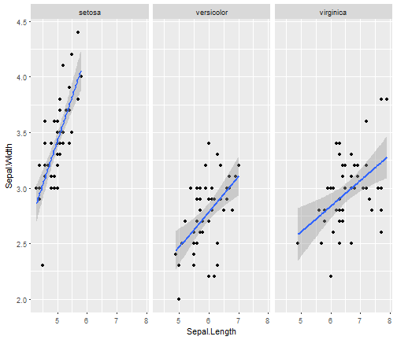

Este es un ejemplo de una tabla en lenguaje de marcadores
| Descriptivo | Sepal.Length | Sepal.Width | Petal.Length |
|---|---|---|---|
| Mínimo | 4.3 | 2.0 | 1.0 |
| Mediana | 5.8 | 3.0 | 4.35 |
| Máximo | 7.9 | 4.4 | 6.9 |
Tulia Eva Salcedo Palacios
Congreso Interamericano de Estadistica
Este es un ejemplo de una tabla en lenguaje de marcadores
| Descriptivo | Sepal.Length | Sepal.Width | Petal.Length |
|---|---|---|---|
| Mínimo | 4.3 | 2.0 | 1.0 |
| Mediana | 5.8 | 3.0 | 4.35 |
| Máximo | 7.9 | 4.4 | 6.9 |
require(ggplot2)
require(gridSVG)
p <- ggplot(iris, aes(Sepal.Length, Sepal.Width)) + geom_point()
p + facet_grid(. ~ Species) + stat_smooth(method = "lm")

Cuál es la nota de Eva?
Su primer nombre no es Tania
Esta es la respuesta correcta ¡FELICITACIONES!